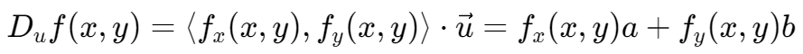

方向导数与梯度 | Directional Derivatives and the Gradient Vector
方向导数 | Directional Derivatives
对于函数  ，在方向 上的方向向量：
，在方向 上的方向向量：

梯度向量 | Gradient Vector
对于函数 ，其梯度
方向导数与梯度向量的关系
方向导数即为梯度向量与该方向的单位向量的点乘
梯度向量方向的方向导数最大，即
对于函数 ，在方向 上的方向向量：
对于函数 ，其梯度
方向导数即为梯度向量与该方向的单位向量的点乘
梯度向量方向的方向导数最大，即